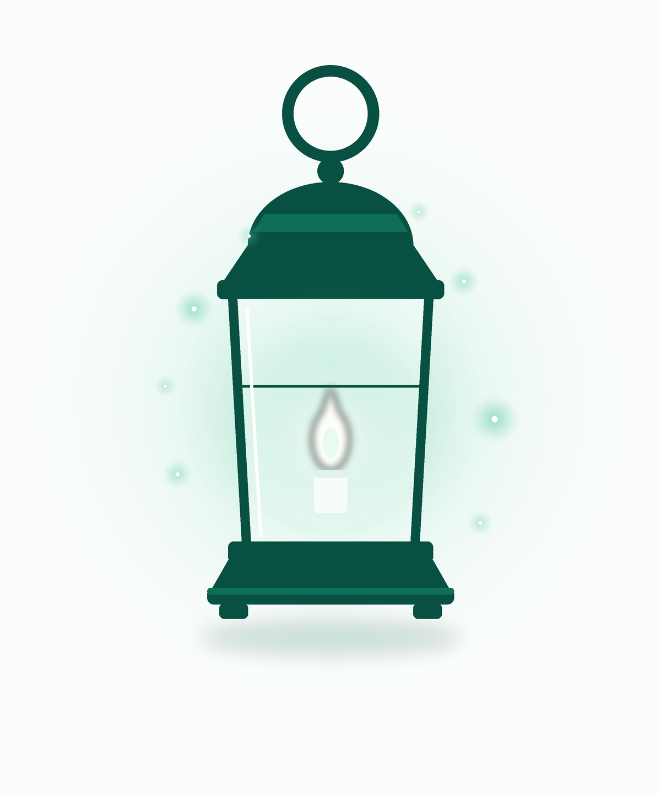
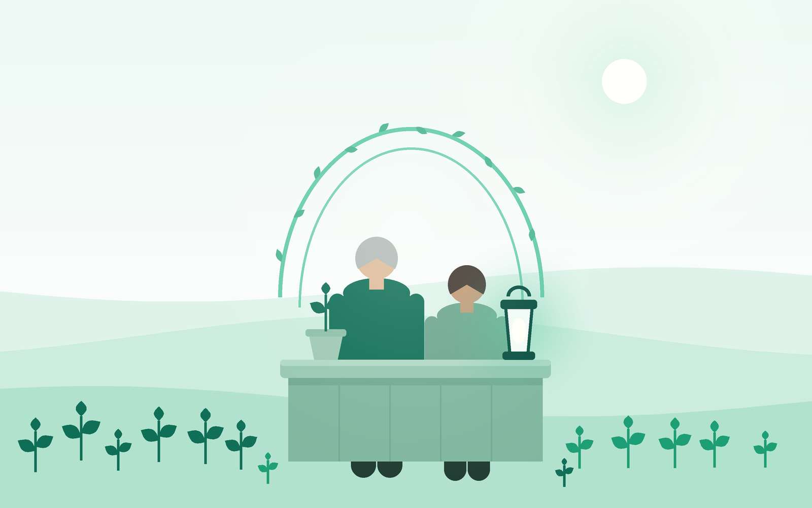

Get to Yes — before you ship
Compliance gates run as tests in the pipeline, so approval is something you earn in CI — not a meeting you wait for.
Ship Safe AI · Never Unsafe AI · Policy as Code
Before you ship, while it runs, when it breaks — governance as code that makes AI safe to say yes to, built in the open by a community keeping the garden of humanity growing. Come see. Come join.

Compliance gates run as tests in the pipeline, so approval is something you earn in CI — not a meeting you wait for.
Continuous checks watch the running system, so the yes you shipped with is still true on a Tuesday in production.
Incidents end with evidence and a path back to safe operation — recovery is part of the contract, not an apology.
before you ship → while it runs → when it breaks
The governed community — registration, never money or secrecy.
Enter the governed communityEverything we know, in the open, on three shelves.
Read the Library — three shelvesWhat moved in AI governance, and what to do about it.
Weekly on SubstackMeet the people who ship governed AI to production.
View & Register on LumaOr schedule a call with a community leader · explore Beacon & Umbrella in the open
Tend the garden:
What the foundation builds on
Compliance checks embedded in production pipelines as testable, versioned code.
Closing the gap between governance policy on paper and reality in production.
Regulatory alignment that scales with deployment — not against it.
Practitioner-led tools and open standards built by people who ship to production.

The founders
Together, advancing responsible AI governance for organizations navigating the evolving AI landscape.
Co-founders, AiGovOps Foundation
The toolkit
Scans what actually runs, then signs what it saw — evidence you can hand to an auditor, not a screenshot.
The light a person carries through the dark parts — a CLI that keeps the human's hand on every irreversible step.
Compiles regulation into runnable policy — 40+ frameworks expressed once, enforced everywhere you deploy.
scan → carry → compile — every link signed, every yes verifiable
One honest email a week — no noise, no dark patterns, unsubscribe any time.